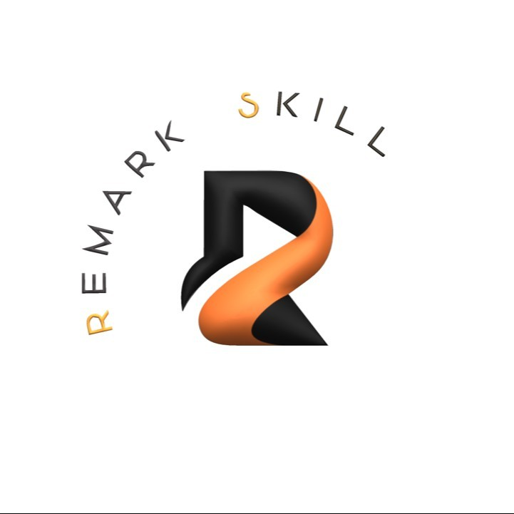

Architecture
Module boundaries, data models and contracts that still make sense two years later.
Niketan Bothe
Six years building products where I own the whole path — the data model and services, the web applications on top of them, and the mobile clients in people's hands. Currently leading the architecture of the V2 mobile platform at RentalMatics, alongside the multi-tenant backend and microfrontend it runs against.
I work across the three layers most teams split between three people: the services and data model underneath, the web applications that expose them, and the mobile clients that consume them. Owning all three means I design for the seams — the API contract, the offline case, the release and rollback path — instead of discovering them late.
At RentalMatics that means leading the architecture of the V2 mobile platform while the same work continues server-side in a multi-tenant Laravel system and in the browser in a React and AngularJS microfrontend serving nine locales.
Seniority, to me, is about the decisions that are expensive to reverse: module boundaries, data models, release strategy, and the observability that tells you when a call was wrong. I optimise for teams shipping confidently long after I've moved on.
Module boundaries, data models and contracts that still make sense two years later.
Schema to screen — I ship the service, the interface and the pipeline between them.
Regression gates, staged rollouts and telemetry that surfaces problems before users do.
The services, the interfaces, and the pipeline that gets them in front of people.
Domain-driven services, multi-tenant data isolation, queue-backed workloads and versioned contracts clients can depend on.
React and microfrontend systems, internationalised including RTL.
React Native at architecture level — modules, natives, releases.
AWS, GCP and Azure — topology, scaling and cost.
Build and release pipelines, over-the-air updates, staged rollouts and a rollback path that has been tested.
End-to-end and performance suites enforced in CI.
Crash, performance and delivery telemetry instrumented so regressions surface before a user reports them.
Design reviews, mentoring and written decisions that keep a team aligned once the codebase outgrows one head.
Backend, web and mobile — usually all three on the same product.
Led the architecture of a ground-up rebuild: a modular core library, migration to React Native's New Architecture, a runtime capability model for constrained devices, and the push and over-the-air release infrastructure behind it.
Laravel platform with per-tenant data isolation and domain-driven modules, queue-backed workloads, and a four-channel notification pipeline serving fleet operators across Europe.
Journey replay and alert management delivered into a hybrid React and AngularJS shell, with shared authentication state and nine locales including RTL.
Classifies devices at runtime and degrades UI work under sustained frame drops, keeping the product usable on low-end hardware without forking the codebase.
End-to-end and performance regression suites running on a device matrix, wired into CI so a broken flow or a frame-rate drop fails the build instead of the release.
MSc research into memory management and recovery efficiency — metadata categorisation for deduplication accuracy, and parallel processing strategies for backup and restore throughput.
A mobile platform to architect, a backend to modernise, or a release pipeline that needs to become boring — happy to get into the detail.
Niketan's multitasking ability was unlike I've seen before and made an applause-worthy increase in growth level. He handles any situation calmly and patiently, even with the toughest projects, and grabs new technical skills quickly. Any organization would be lucky to have him.
Niketan is an IT networking genius with an outstanding network and the highest certifications from Microsoft, Google and AWS. He is a professional Cloud Developer and excellent Full-Stack Developer — truly a gem.
Always available to help, striving for excellence and a valuable team player. His strongest qualities are AI/ML, IoT, Cloud and full-stack web development. He handles multiple tasks and still delivers quality work — one of the best in his field.
It was a great pleasure working with Niketan. He always puts in that extra help whenever you need it and is open with innovative ideas. He brings integrity and intelligence to his work and would become an appreciated member of any team.
All the tasks and projects assigned to Niketan were completed on time. His behaviour is professional and he can definitely be called a perfect team player.

Architecture reviews, a platform that needs owning end to end, or a delivery process that has stopped keeping up — those are the conversations I enjoy most.
Start a conversation